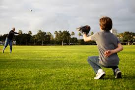

An object at rest stays at rest, and an object in motion stays in motion unless acted on by an outside force. This means that if a soccer ball is sitting in the grass, it will remain sitting still.
But that also means that when an outside force acts on it, it flies across the grass.
 That is an example of an object at rest being acted on by an outside force, but what about an object in motion being acted on by an outside
force?
That is an example of an object at rest being acted on by an outside force, but what about an object in motion being acted on by an outside
force?
Imagine that you throw a baseball across the field to your friend. It keeps flying through the air for a few seconds...
Until it is caught by your friend. Your friend is the outside force.